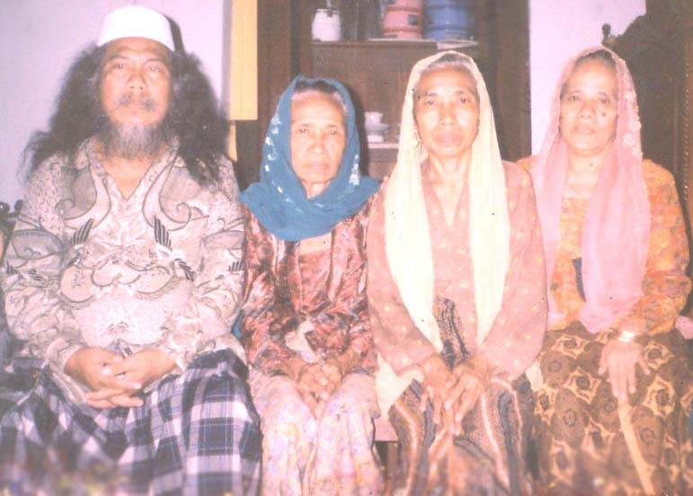

Pondok pesantren Lirboyo merupakan salah satu pondok pesantren yang berdiri sebelum kemerdekaan NKRI, berdiri pada tahun 1910 M, didirikan oleh KH. Abdul Karim, Ulama yang menjadi murid kinasih dari KH. Kholil Bangkalan Madura. KH. Abdul Karim menikahi salah satu putri dari Kyai asal Banjarmelati, salah satu desa di kawasan Kediri, yang terkenal dengan sebutan Kyai Sholeh Banjarmelati. KH. Abdul Karim mempersunting salah satu putri beliau yang bernama Nyai Domroh.
Dari pernikahan KH. Abdul Karim dan Nyai Domroh dikaruniai 8 anak, yaitu: Nyai Hannah yang dipersunting Kyai Abdullah Turus, Kyai Nawawi yang wafat di Makkah, Nyai Salamah yang dinikahkan dengan KH. Mansur Anwar Pacul Gowang, Kyai Abdullah, Nyai Aisyah yang dipersunting KH. Jauhari Fadil, Nyai Maryam yang dinikahkan dengan KH. Marzuqi Dahlan, Nyai Zainab yang dipersunting KH. Mahrus Aly, dan Nyai Qomariyah yang dinikahkan dengan KH. Zaini Munawwir Krapyak.
Salah satu putri KH. Abdul Karim yaitu putri ke-5 yang bernama Nyai Aisyah dinikahkan dengan Kiai Jauhari Fadil Batokan. Setelah menikah beliau tinggal di Lirboyo dan membina rumah tangga di sana. Pada tahun pertama pernikahannya, Kiai Jauhari langsung diminta oleh Kiai Abdul Karim untuk membantu dan mengajar para santri yang waktu itu berjumlah 500 orang.
Di antara para menantu KH. Abdul Karim, Kiai Jauhari merupakan menantu pertama yang membantu mertuanya mengajar dan memperjuangkan keberlangsungan pondok pesantren Lirboyo. Selama membantu mertuanya itu, Kiai Jauhari sering mendengar bahwa enam tahun sebelumnya pondok pesantren Lirboyo sudah menggunakan sistem klasikal (sekolah), namun selama dua tahun terakhir kala itu sempat mengalami kevakuman.
Sebagai seorang yang peduli pada dunia pendidikan, kesempatan membantu mertuanya itu dijadikan momentum untuk mengalirkan ide pendirian kembali madrasah yang telah mati tersebut. Ide itu ternyata mendapat respon positif dari Kiai Abdul Karim. Dengan bantuan para kiai yang sudah banyak tahu tentang sistem pendidikan klasik, yaitu Kiai Kholil (salah satu Kiai di Pondok Pesantren Tebuireng asal Melikan, Kediri) dan Kiai Faqih Asy'ari (pengasuh Pondok Pesantren Sumber Sari, Pare), Kiai Jauhari merancang kembali sistem belajar mengajar yang sangat diidam-idamkan itu.
Pada tahun 1942 bersamaan dengan penjajahan Jepang, Madrasah Hidayatul Mubtadi'in (MHM) mengalami kemunduran hingga para santri tersisa hanya 150, dan yang bisa menyelesaikannya hanya sedikit. Pada masa ini MHM terdiri dari kelas Sifir (persiapan) dan Ibtidaiyah (dasar).
Selain membangun pendidikan, Pondok Pesantren Lirboyo juga merupakan penopang suksesnya proses kemerdekaan NKRI. Ketika Ketua Rais Akbar NU, yaitu Hadhratussyaikh KH. Hasyim Asy'ari mengeluarkan fatwa jihad pada tahun 1945, Lirboyo meliburkan pesantren dan mengirimkan para santri untuk berjihad memenuhi panggilan Resolusi Jihad yang dikumandangkan Hadhratussyaikh.
Tahun 1947 didirikanlah Madrasah Mualimin atas gagasan H. Zamroji, kepala MHM sejak tahun 1942. Pada masa ini, sistem madrasah diganti dari yang awalnya Sifir dan Ibtidaiyah menjadi Ibtidaiyah dan Tsanawiyah.
Tidak berselang lama, kepemimpinan KH. Abdul Karim sebagai pendiri sekaligus pengasuh Pondok Pesantren Lirboyo berakhir, tepatnya pada tahun 1954 M (21 Ramadhan 1374 H) beliau wafat dan dimakamkan di barat Masjid Lirboyo. Pondok Pesantren Lirboyo kemudian diasuh oleh menantunya KH. Marzuqi Dahlan dan KH. Mahrus Aly.
Pada masa keduanya, pesantren mengalami banyak cobaan karena berketepatan dengan peristiwa G30S/PKI, akan tetapi Lirboyo juga mengalami kemajuan dengan banyaknya santri yang berdatangan. Bahkan, pada tahun 1966 lahirlah sebuah perguruan tinggi milik Lirboyo yang bernama IAIT (Institut Agama Islam Tribakti).
Dari pasangan Kiai Jauhari dan Nyai Aisyah ini pula lahirlah seorang bayi laki-laki diberi nama Abdullah Maksum, yang tidak lain adalah pendiri salah satu perguruan silat yang sangat berpengaruh di Kediri yaitu GASMI.
Jl. KH. Abdul Karim, Lirboyo, No. 45, Kec. Mojoroto, Kota Kediri.
Atau terhubung dengan kami di: